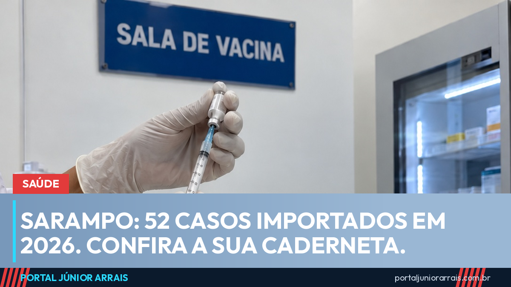

Sarampo: Brasil tem 52 casos importados em 2026; veja quem precisa se vacinar

O Brasil confirmou 52 casos de sarampo em 2026 até 5 de outubro, todos classificados como importados. São 41 em São Paulo, 10 no Amazonas e 1 no Rio de Janeiro. O país continua considerado livre da circulação permanente da doença, mas o Ministério da Saúde reforçou as ações diante do avanço do sarampo nas Américas.
Por que o alerta
Os Estados Unidos registram o maior número de casos em mais de 35 anos, e mais de 90% dos doentes não eram vacinados ou não sabiam se eram. Segundo a Organização Pan-Americana da Saúde, Estados Unidos, Guatemala, México, Peru e Canadá concentram mais de 95% dos casos confirmados nas Américas neste ano.
O Brasil conhece esse risco de perto. Em 2019 foram mais de 20 mil casos, e o país perdeu o certificado de eliminação da doença depois de mais de um ano de transmissão. A certificação só voltou em novembro de 2024.
Em 2026, já foram feitas quatro grandes mobilizações de vacinação: mais de 3,8 milhões de doses em São Paulo e cerca de 192 mil no Amazonas. Na capital paulista, em Guarulhos, São Bernardo do Campo e Santo André, as equipes fazem busca ativa, acompanham quem teve contato com doentes e aplicam a vacina de bloqueio. Na fronteira com a Colômbia e o Peru, o trabalho também foi reforçado.
Quem precisa se vacinar
A proteção vem da vacina tríplice viral, que também protege contra caxumba e rubéola. Pelo calendário nacional:
- crianças: primeira dose aos 12 meses e segunda aos 15 meses;
- pessoas de 1 a 29 anos: duas doses ao longo da vida;
- pessoas de 30 a 59 anos: uma dose;
- bebês de 6 a 11 meses: a chamada dose zero, aplicada a mais em locais com casos ou circulação do vírus. Ela não substitui as doses dos 12 e dos 15 meses.
Quem não sabe se tomou, ou perdeu a caderneta, deve procurar uma unidade de saúde para conferir a situação. Em 2025, a primeira dose da tríplice viral chegou a 93,1% das crianças no país, ainda abaixo da meta de 95%.
Os sinais da doença
O sarampo começa com febre alta, tosse, nariz escorrendo e olhos vermelhos. Depois surgem manchas avermelhadas que começam no rosto e se espalham pelo corpo. É uma das doenças mais contagiosas que existem e pode ter complicações graves, principalmente em bebês, gestantes e pessoas com a imunidade baixa. Diante desses sinais, a orientação é procurar atendimento e avisar se houve viagem ou contato com alguém que veio de fora.
Cuidado com golpe
Campanha de vacinação também atrai golpista. Mensagens com link para "agendar a vacina", "emitir o comprovante" ou "liberar a dose" mediante pagamento são falsas. A vacina do calendário nacional é aplicada no SUS sem cobrança, e nenhum posto pede Pix, senha ou foto de documento por mensagem.
No portal, o guia de golpes mostra como reconhecer as fraudes mais comuns.
Conteúdo informativo — não substitui orientação individualizada sobre o seu caso.
Júnior Arrais · Editor do Portal Júnior Arrais
Comunicador de Ubá (MG). Escreve todos os dias sobre benefícios sociais, INSS, trabalho e economia do dia a dia, a partir do Diário Oficial, de portarias e de fontes oficiais, em linguagem simples. Conheça a linha editorial e a política de correções do portal.